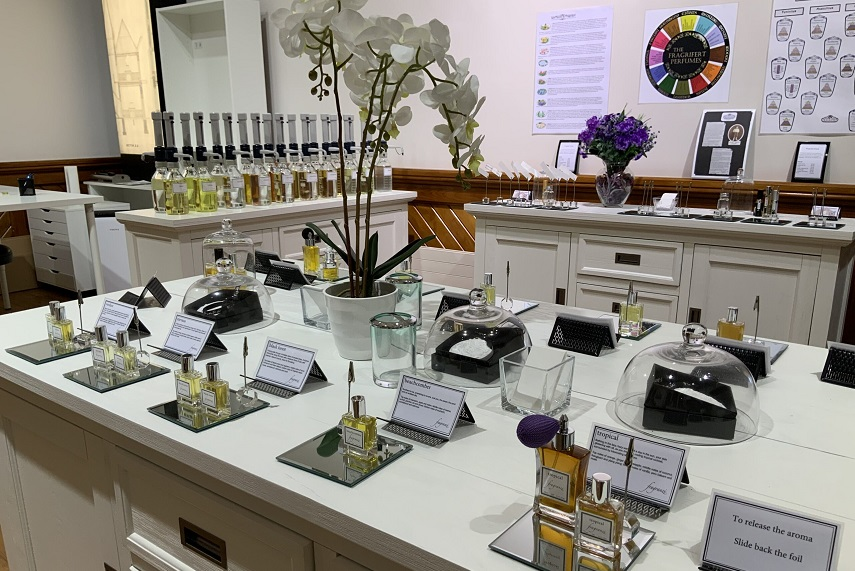

FUNKEN
aromas y sonido
FUNKEN es la combinación de sensaciones que surgen al dejarse llevar por los sentidos.
Nuestro enfoque naturalmente se encuentra en los dos que más han conseguido inspirarnos.



FUNKEN es la combinación de sensaciones que surgen al dejarse llevar por los sentidos.
Nuestro enfoque naturalmente se encuentra en los dos que más han conseguido inspirarnos.